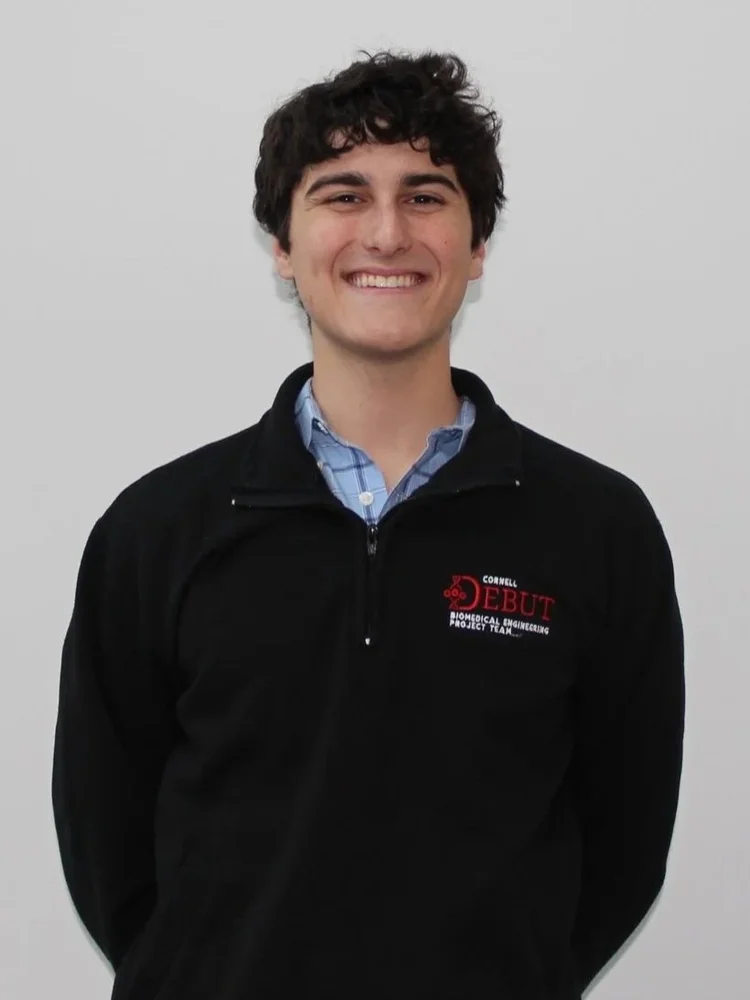
I'm a mechanical engineer from Long Island, New York, and a recent graduate of Cornell University. My interest in healthcare started with the first EpiPen I carried as a child for severe allergies. It was one of the first products that showed me how engineering could directly improve someone's quality of life, and that curiosity eventually grew into a passion for medical technology and product development.
Since then, I've worked across several sides of engineering. I've focused on R&D for medical devices at organizations including J&J MedTech, Anova Biomedical (Cornell Biofoundry), and Cornell DEBUT, helped improve operational efficiency and technology transfer at Siemens Healthineers and Chiplytics, and worked alongside founders at early-stage startups through Rev: Ithaca Startup Works. What excites me most is seeing how ideas move from concept to prototype, manufacturing, and ultimately into the hands of the people who need them.
I'm a proud first-generation college graduate from a family of business owners, and I've spent as much time around construction sites and electrical work as I have in engineering labs. That background shaped how I approach problem-solving: stay practical, understand the bigger picture, and never lose sight of the end user.
Outside of engineering, you'll usually find me playing soccer, cooking with my family, or playing jazz guitar. As I start my career, I'm excited by opportunities at the intersection of R&D, product development, manufacturing, and entrepreneurship, especially in healthcare, where great engineering has the potential to make a lasting impact.
View Full CV →A few snapshots
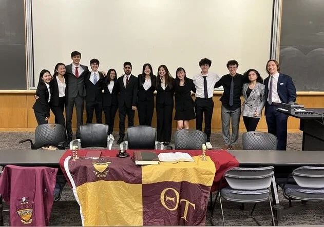
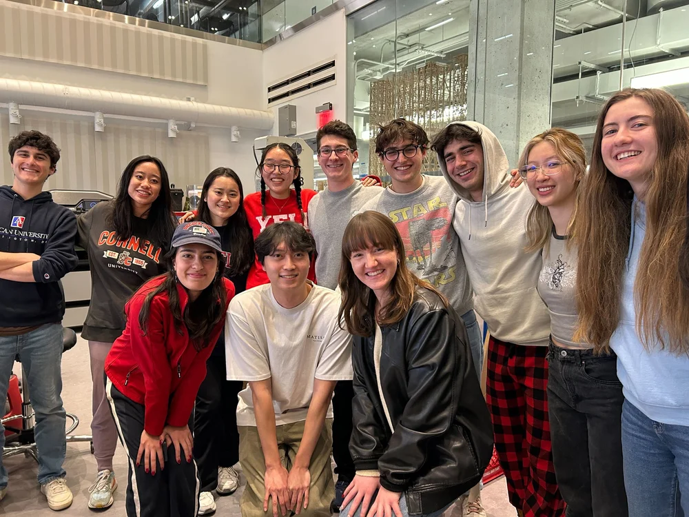
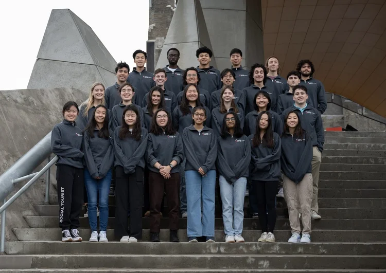
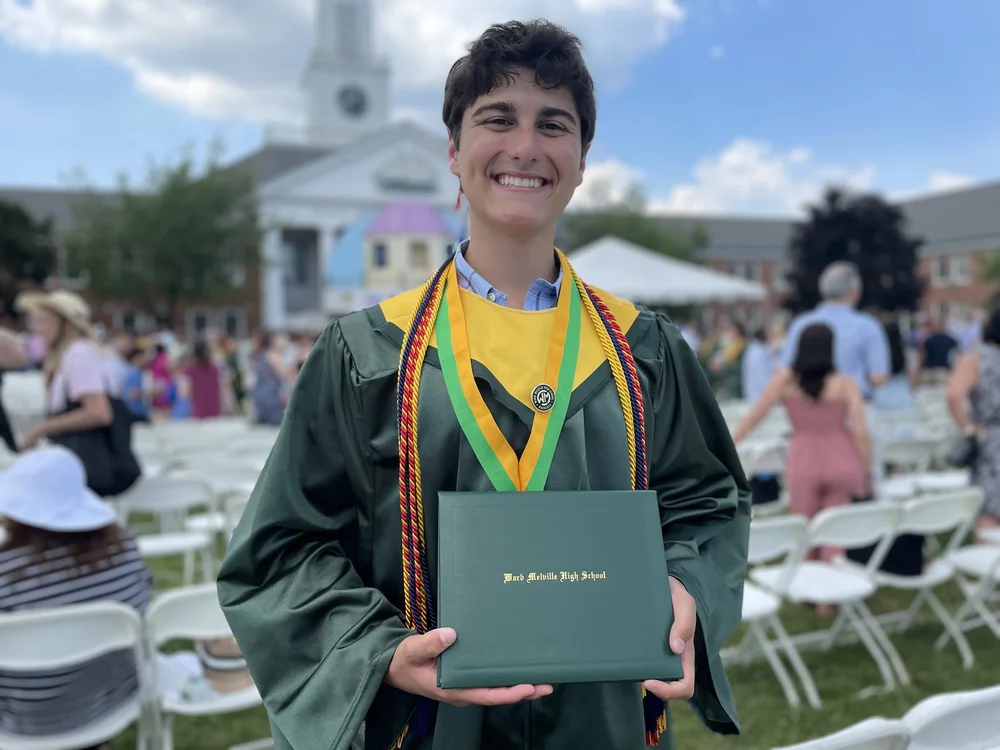
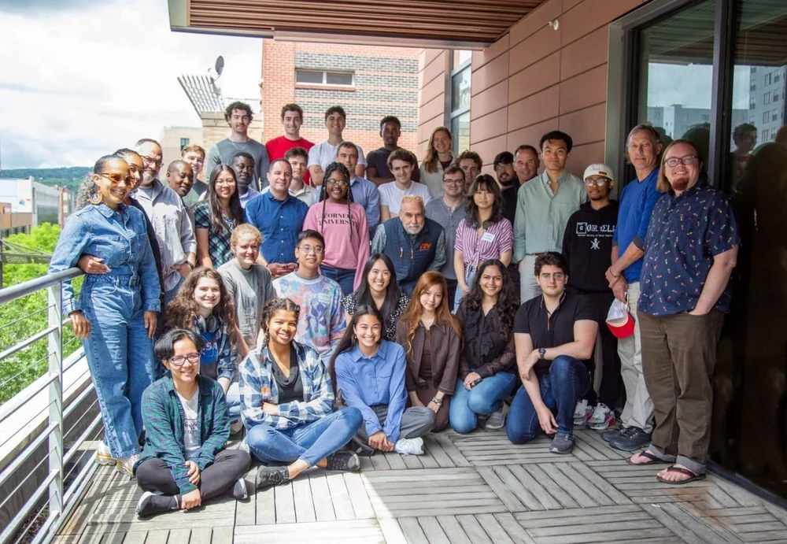
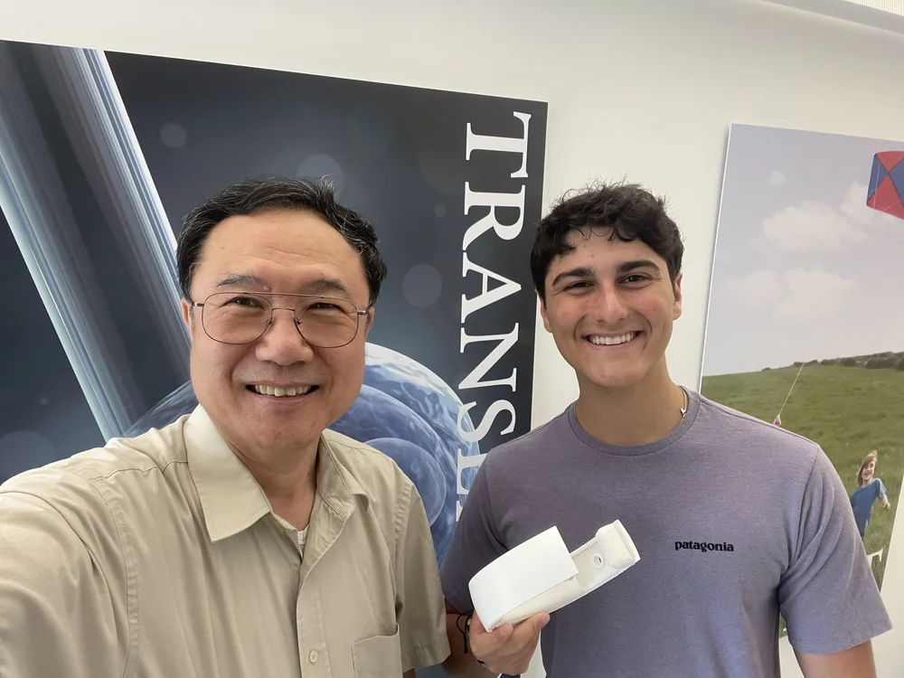
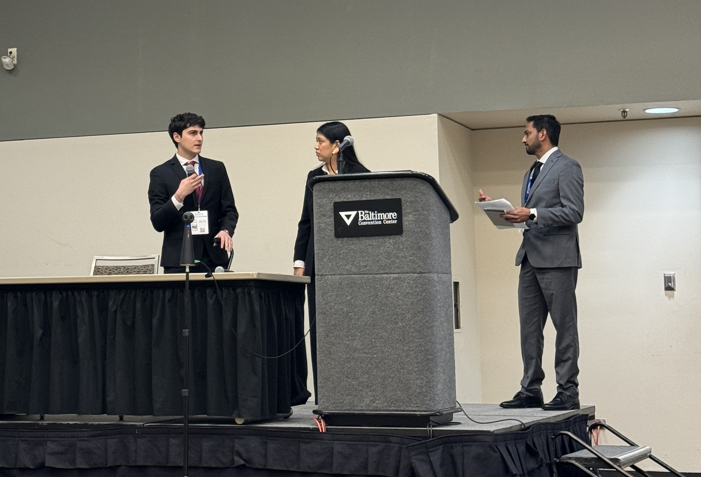


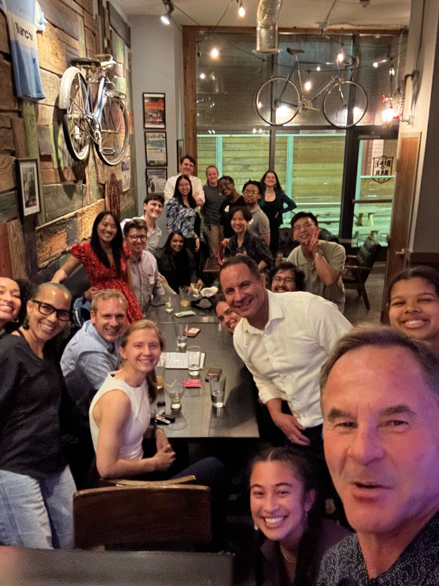
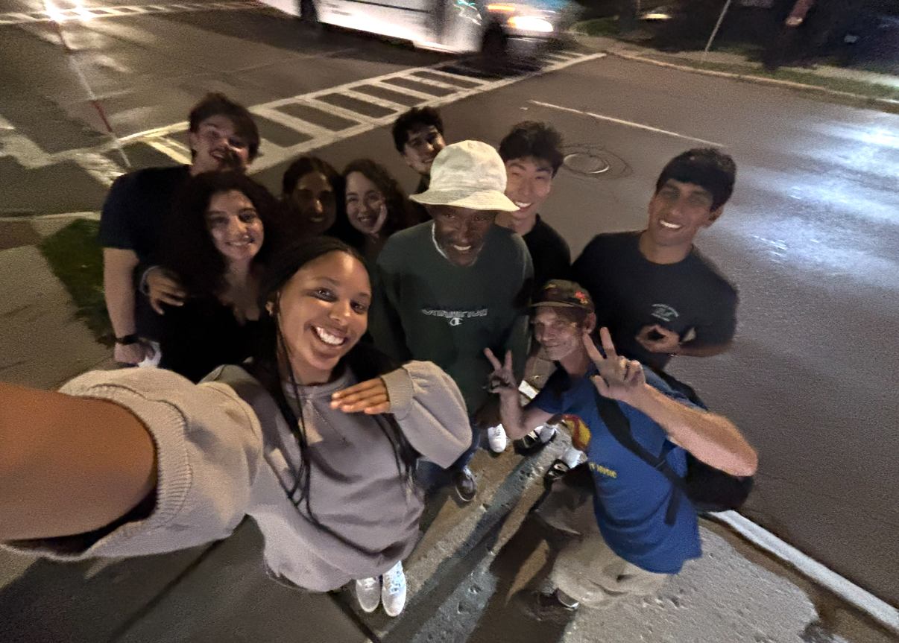
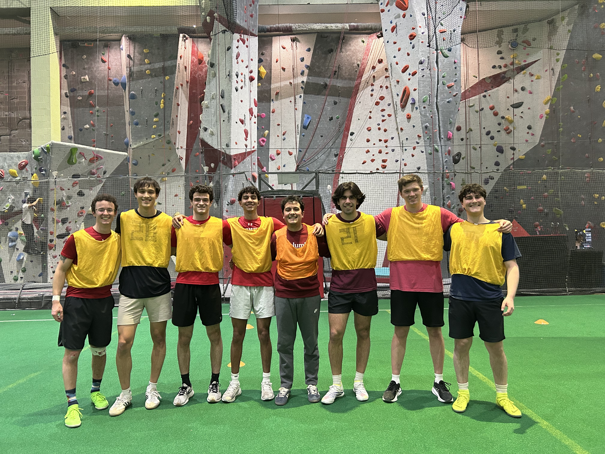